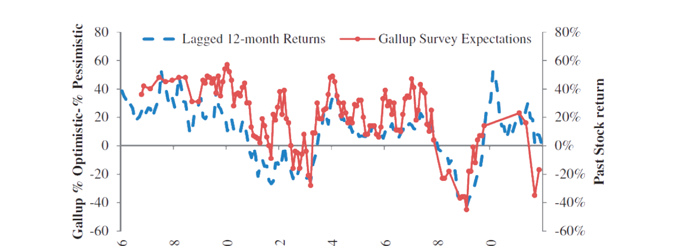
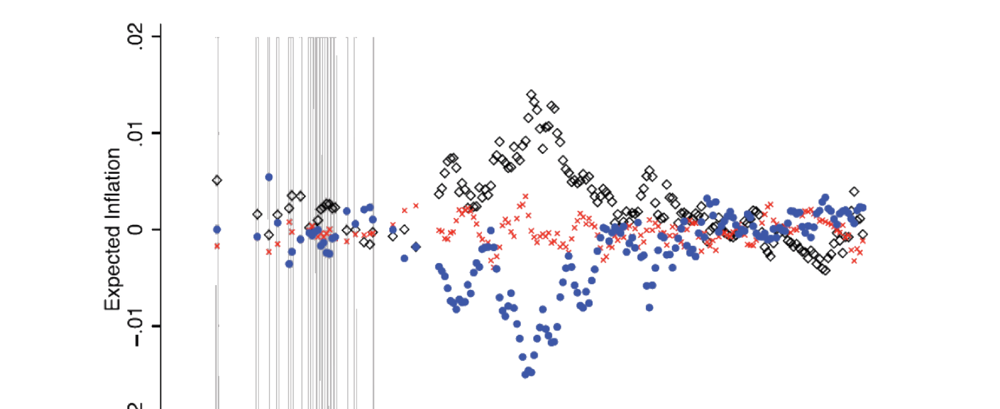
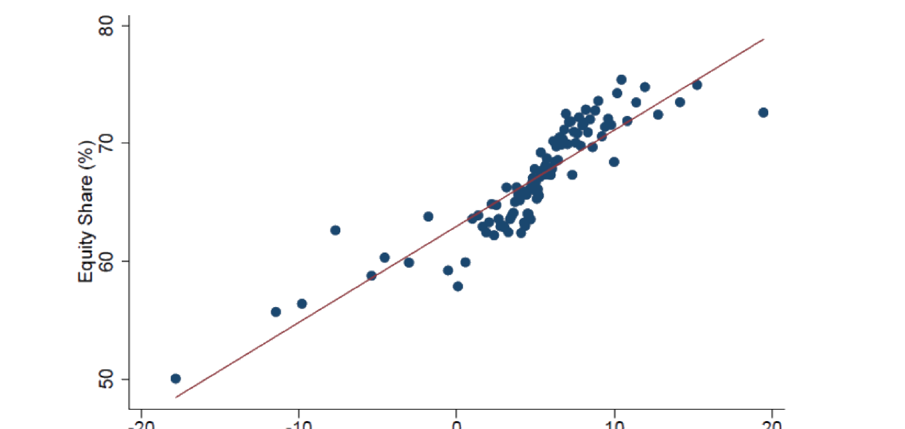

27. Subjective Expectations and Investor Decisions
本章综述三篇用调查数据研究投资者主观预期及其如何驱动投资决策的实证论文。(§27.1) Greenwood-Shleifer (2014)：六个调查来源的投资者股市预期高度正相关、与共同基金流入正相关、与过去收益（及价格-股利比）正相关（外推 extrapolation）、但与模型隐含理性预期收益负相关——构成对理性预期代表性投资者模型的反例。(§27.2) Malmendier-Nagel (2016)：个人过度加权其一生中亲历的通胀经验，故年轻人比老年人更新更快、二者在高通胀期（如 1970s）显著分歧；用学习-自经验框架（年龄相关的递减增益 27.4）解释家庭借贷与房贷选择，并发现聚合增益近似常数 \(\gamma=0.0180\)。(§27.3) Giglio et al. (2019)：对 Vanguard 富裕散户的新调查，得五个事实——信念反映在组合配置中（但敏感度小）、信念变化不预测交易时机但影响交易方向/幅度、信念主要由巨大持久的个体异质性解释、预期现金流增长与预期收益正相关、预期收益与罕见灾难主观概率负相关。
This chapter surveys three empirical papers that use survey data to study investors' subjective expectations and how they drive investment decisions. (§27.1) Greenwood-Shleifer (2014): investor stock-market expectations from six survey sources are highly positively correlated with each other, positively correlated with mutual fund inflows, positively correlated with past returns (and the price-dividend ratio) (extrapolation), but negatively correlated with model-implied rational-expectations returns — a counterexample to rational-expectations representative-investor models. (§27.2) Malmendier-Nagel (2016): individuals overweight the inflation experienced in their lifetimes, so the young update faster than the old and the two disagree substantially in high-inflation periods (e.g. the 1970s); using a learning-from-experience framework (age-dependent decreasing gain, 27.4), they explain household borrowing and mortgage choices and find the aggregate gain is approximately constant at \(\gamma=0.0180\). (§27.3) Giglio et al. (2019): a new survey of wealthy Vanguard retail investors yields five facts — beliefs are reflected in portfolio allocations (but sensitivity is small), belief changes don't predict trade timing but affect trade direction/magnitude, beliefs are mostly explained by large persistent individual heterogeneity, expected cash-flow growth and expected returns are positively related, and expected returns and the subjective probability of rare disasters are negatively related.
27.1 Investor Expectations Are Based on Past Returns: Greenwood and Shleifer (2014)
27.1.1 Key Points
Greenwood-Shleifer (2014) 研究投资者对未来股市收益主观预期的性质，用 1963–2011 年六个数据源。发现：
- 六来源投资者预期高度正相关（说明调查有意义、彼此一致，尽管有噪声）；
- 投资者预期与共同基金流入正相关（说明投资者言行一致）；
- 投资者预期与过去股市收益及股价水平（价格-股利比）正相关（外推行为）；
- 但投资者预期与模型隐含的预期收益负相关（这是对理性预期代表性投资者模型的反证）。
27.1.2 Data
六个数据源（详见原书 Figure 27.1/27.2 列表）：(1) Gallup 投资者调查（"很乐观/乐观/中性/悲观/很悲观"，% 看涨−% 看跌；亦问最低可接受收益率 1998–2000、估计百分比收益 1998–2003）；(2) Graham-Harvey CFO 调查（自 1998，每季 200+ CFO，对未来一年美股收益预期）；(3) American Association of Individual Investors（每周看涨/中性/看跌）；(4) Investor Intelligence（自 1963，120+ 独立通讯简报）；(5) Shiller 投资者调查（耶鲁，自 1980s，个人信心指数 = 预期未来一年市场上涨的比例）；(6) Michigan Survey Research Center（自 1946 调查消费者信念，2000–2005 问未来 2-3 年更广市场收益预期）。
27.1.3 Empirical Analysis
- 六来源高度正相关（Figure 27.3 相关矩阵，多数 \(p\)-值 ≈ 0；唯 Michigan 与个别系列因样本短而相关较弱）。
- 与共同基金流入正相关（Figure 27.4：Gallup % 看涨−% 看跌 与流入股市占股权市值的百分比同向变动）。
- 与过去收益正相关（Figure 27.5：Gallup 预期与 CRSP 价值加权 12 月滚动名义收益同向；投资者预期更强烈依赖最近的市场收益）。
27.1.1 Key Points
Greenwood-Shleifer (2014) study the nature of investors' subjective expectations of future stock-market returns, using six data sources from 1963–2011. They find:
- expectations from the six sources are highly positively correlated (surveys are meaningful and consistent despite noise);
- expectations are positively correlated with mutual fund inflows (investors mean what they say);
- expectations are positively correlated with past stock returns and the stock price level (price-dividend ratio) (extrapolation);
- but expectations are negatively correlated with model-implied expected returns (evidence against rational-expectations representative-investor models).
27.1.2 Data
Six data sources (full list in the book's Figure 27.1/27.2): (1) Gallup investor survey ("very optimistic/optimistic/neutral/pessimistic/very pessimistic", %Bullish−%Bearish; also asks minimum acceptable return 1998–2000 and estimated % return 1998–2003); (2) Graham-Harvey CFO survey (since 1998, 200+ CFOs quarterly, expectations of next-year US stock returns); (3) American Association of Individual Investors (weekly bullish/neutral/bearish); (4) Investor Intelligence (since 1963, 120+ independent newsletters); (5) Shiller investor survey (Yale, since the 1980s, individual confidence index = % expecting the market to rise next year); (6) Michigan Survey Research Center (surveying consumer beliefs since 1946; 2000–2005 asked about broader market return expectations over the next 2-3 years).
27.1.3 Empirical Analysis
- Six sources highly positively correlated (Figure 27.3 correlation matrix, most \(p\)-values ≈ 0; only Michigan and a few series are weakly correlated due to short samples).
- Positively correlated with mutual fund inflows (Figure 27.4: Gallup %Bullish−%Bearish moves with inflows into equity as a percentage of equity market capitalization).
- Positively correlated with past returns (Figure 27.5: Gallup expectations move with the CRSP value-weighted 12-month rolling nominal return; investor expectations depend more strongly on the most recent market returns).

- 与模型隐含预期收益负相关：如对数股价-股利比（预期收益的度量）与 Gallup % 看涨−% 看跌的时间序列相关为 $-0.33$。
- 高预期预测长期更低收益：Figure 27.6 给出回归 (27.1) 的系数估计：
- Negatively correlated with model-implied expected returns: e.g. the log dividend-price ratio (a measure of expected returns) has a time-series correlation of $-0.33$ with Gallup %Bullish−%Bearish.
- Higher expectations predict lower future returns at long horizons: Figure 27.6 gives the coefficient estimates of regression (27.1):
$$R^e_{t+k}=a+bX_t+u_{t+k}\tag{27.1}$$
\(R^e_{t+k}\) 为股市 \(k\) 期超额收益，\(X_t\) 为投资者预期或预期收益之一。结果：高投资者预期预测长期更低未来收益。乐观时 IPO 也更多（Figure 27.7：Gallup % 看涨−% 看跌与 IPO 数量正相关）。
27.1.4 / 27.1.5 Contribution & Discussion
贡献：首篇用全面调查来源做实证分析；尽管有对调查数据的经典质疑，作者用六来源的相互正相关、及与基金流的正相关，证明调查数据有意义（非噪声）、反映投资者真实想法；为后续用调查数据的研究树立验证范式。讨论：各来源样本量较小、样本期与方法不可比、部分无连续报告（数据所限，无可奈何）；IPO 时机（Figure 27.7）论证不太有说服力（可能有同时影响 IPO 与市场价格的其他因子）。可能扩展：用更细的个体持仓数据（如 Terrance Odean 数据集）研究个体投资者如何对过去收益反应、如何形成信念并指导交易。
27.2 Learning from Inflation Experience: Malmendier and Nagel (2016)
27.2.1 Key Points
Malmendier-Nagel (2016) 研究个人对未来通胀的预期。提出个人过度加权其一生中亲历的通胀：年轻人比老年人更新更强（近期经验对年轻人权重更大），故不同年龄段在高波动通胀期（如 1970s）显著分歧。用 57 年 Reuters/Michigan 消费者调查通胀预期数据，发现：经验差异预测预期差异；这些发现解释家庭借贷/放贷模式与房贷选择。
27.2.2 Framework
设两个体，一生于 \(s\)、另一生于 \(s+j\)。\(t+1\) 期通胀 \(\pi_{t+1}\) 在 \(t\) 期形成（\(t>s+j\)）。设 \(\pi_{t+1}\) 服从 AR(1) (27.2)：\(\pi_t=\alpha+\phi\pi_{t-1}+\eta_t\)，即 \(\pi_t=\mathbf b'\mathbf x_t+\eta_t\)，\(\mathbf b=(\alpha,\phi)'\)、\(\mathbf x_t=(1,\pi_{t-1})'\)。队列 \(s\) 在 \(t\) 时对 \(\mathbf b\) 的更新后验估计 \(\mathbf b_{t,s}\) (27.3)：
\(R^e_{t+k}\) is the \(k\)-period stock-market excess return, \(X_t\) one of the investor expectations or expected returns. Result: higher investor expectations predict lower future returns at long horizons. More IPOs also occur when investors are optimistic (Figure 27.7: Gallup %Bullish−%Bearish positively correlated with the number of IPOs).
27.1.4 / 27.1.5 Contribution & Discussion
Contribution: the first paper to use a comprehensive set of survey sources for empirical analysis; despite classical concerns about survey data, the authors show compelling evidence of mutual positive correlations among the six sources and a positive correlation with fund flows, proving survey data are meaningful (not noise) and reflect investors' true thoughts; it sets a validation paradigm for later studies using survey data. Discussion: the sources have relatively small samples, with incomparable sample periods and methodologies, and some lack consecutive reports (nothing to do about it, we have what we have); the IPO-timing argument (Figure 27.7) is not very convincing (there could be other factors simultaneously correlated with both IPOs and current price). Possible extension: use more granular individual position holdings (e.g. Terrance Odean's dataset) to study how individual investors react to past returns, form beliefs, and guide trading.
27.2 Learning from Inflation Experience: Malmendier and Nagel (2016)
27.2.1 Key Points
Malmendier-Nagel (2016) study individuals' expectations of future inflation. They propose that individuals overweight the inflation experienced in their lifetimes: the young update more strongly than the old (recent experiences carry larger weight for the young), so different age groups disagree substantially in highly volatile inflation periods (e.g. the 1970s). Using 57 years of Reuters/Michigan consumer survey inflation expectations, they find: differences in experience predict differences in expectations; these findings explain household borrowing/lending patterns and mortgage choices.
27.2.2 Framework
Two individuals, one born at \(s\), the other at \(s+j\). Inflation \(\pi_{t+1}\) for period \(t+1\) is formed in period \(t\) (\(t>s+j\)). Suppose \(\pi_{t+1}\) follows an AR(1) (27.2): \(\pi_t=\alpha+\phi\pi_{t-1}+\eta_t\), i.e. \(\pi_t=\mathbf b'\mathbf x_t+\eta_t\), \(\mathbf b=(\alpha,\phi)'\), \(\mathbf x_t=(1,\pi_{t-1})'\). Cohort \(s\)'s updated posterior estimate of \(\mathbf b\) at \(t\), \(\mathbf b_{t,s}\) (27.3):
$$\mathbf b_{t,s}=\mathbf b_{t-1,s}+\gamma_{t,s}\mathbf R_{t,s}^{-1}\mathbf x_t\left(\pi_t-\mathbf b_{t-1,s}'\mathbf x_t\right)\tag{27.3}$$
其中 \(\mathbf R_{t,s}=\mathbf R_{t-1,s}+\gamma_{t,s}(\mathbf x_t\mathbf x_t'-\mathbf R_{t-1,s})\)，OLS 情形增益 \(\gamma_{t,s}=\frac1t\)（推导见折叠证明）。
本文创新是假设年龄相关的增益 (27.4)：
where \(\mathbf R_{t,s}=\mathbf R_{t-1,s}+\gamma_{t,s}(\mathbf x_t\mathbf x_t'-\mathbf R_{t-1,s})\), with OLS-case gain \(\gamma_{t,s}=\frac1t\) (derivation in the collapsible proof).
The paper's innovation is to assume an age-dependent gain (27.4):
$$\gamma_{t,s}=\begin{cases}\dfrac{\theta}{t-s}&\text{if }t-s\ge\theta\\[4pt]1&\text{if }t-s<\theta\end{cases}\tag{27.4}$$
\(\theta>0\) 常数决定过去观测权重函数形状。直觉：代理人到达某年龄阈值 \(\theta\) 后，学习增益随年龄递减。\(t\) 期信息的权重为 \(\frac{\gamma_{t,s}}{1+\gamma_{t,s}}\)（Figure 27.8 给不同 \(\theta\) 的各期增益与权重）。
\(\theta>0\) a constant determining the shape of the weight function on past observations. Intuition: the learning gain decreases with age after the agent reaches a certain age threshold \(\theta\). The weight on time-\(t\) information is \(\frac{\gamma_{t,s}}{1+\gamma_{t,s}}\) (Figure 27.8 gives the period gain and weight for different \(\theta\)).
证明 / Proof：OLS 递归学习 (27.3) 与增益 \(\gamma_{t,s}=\frac1t\)
(27.2) 在 \(t\) 时的 OLS 解 \(\mathbf b_{t,s}=(\frac1t\sum_{\tau=1}^t\mathbf x_\tau\mathbf x_\tau')^{-1}(\frac1t\sum_{\tau=1}^t\mathbf x_\tau\pi_\tau)\)。记 \(\mathbf R_{t,s}=\frac1t\sum_{\tau=1}^t\mathbf x_\tau\mathbf x_\tau'\)、\(\mathbf R_{t-1,s}=\frac1{t-1}\sum_{\tau=1}^{t-1}\mathbf x_\tau\mathbf x_\tau'\)，则 \(t\mathbf R_{t,s}=(t-1)\mathbf R_{t-1,s}+\mathbf x_t\mathbf x_t'\)，整理 \(\mathbf R_{t,s}=\mathbf R_{t-1,s}+\frac1t(\mathbf x_t\mathbf x_t'-\mathbf R_{t-1,s})\)。同理由 \(\mathbf R_{t,s}\mathbf b_{t,s}t=\mathbf R_{t-1,s}\mathbf b_{t-1,s}(t-1)+\mathbf x_t\pi_t\) 整理得 \(\mathbf b_{t,s}=\mathbf b_{t-1,s}+\frac1t\mathbf R_{t,s}^{-1}\mathbf x_t(\pi_t-\mathbf x_t'\mathbf b_{t-1,s})\)，即 (27.3) 中 \(\gamma_{t,s}=\frac1t\)。\(\blacksquare\)
The OLS solution of (27.2) at \(t\) is \(\mathbf b_{t,s}=(\frac1t\sum_{\tau=1}^t\mathbf x_\tau\mathbf x_\tau')^{-1}(\frac1t\sum_{\tau=1}^t\mathbf x_\tau\pi_\tau)\). Denote \(\mathbf R_{t,s}=\frac1t\sum_{\tau=1}^t\mathbf x_\tau\mathbf x_\tau'\), \(\mathbf R_{t-1,s}=\frac1{t-1}\sum_{\tau=1}^{t-1}\mathbf x_\tau\mathbf x_\tau'\); then \(t\mathbf R_{t,s}=(t-1)\mathbf R_{t-1,s}+\mathbf x_t\mathbf x_t'\), rearranging \(\mathbf R_{t,s}=\mathbf R_{t-1,s}+\frac1t(\mathbf x_t\mathbf x_t'-\mathbf R_{t-1,s})\). Similarly from \(\mathbf R_{t,s}\mathbf b_{t,s}t=\mathbf R_{t-1,s}\mathbf b_{t-1,s}(t-1)+\mathbf x_t\pi_t\), rearranging gives \(\mathbf b_{t,s}=\mathbf b_{t-1,s}+\frac1t\mathbf R_{t,s}^{-1}\mathbf x_t(\pi_t-\mathbf x_t'\mathbf b_{t-1,s})\), i.e. \(\gamma_{t,s}=\frac1t\) in (27.3). \(\blacksquare\)
学习从某 \(t>s\) 开始（忽略代理人出生前数据）。亦可让其他信息 \(f_t\) 影响队列 \(s\) 在 \(t\) 时的 \(t+1\) 通胀预测 (27.5)：\(\tilde\pi_{s+1|t,s}=\beta\tilde\pi_{t+1|t,s}+(1-\beta)f_t\)，\(\tilde\pi_{t+1|t,s}=\mathbf b_{t,s}'\mathbf x_t\) 为经验学习。\(f_t\) 可为专业预测者意见、媒体等；\(f_t\) 对决策者（队列 \(s\)）可观测但对计量经济学家未必（计量经济学家不知用什么 \(f_t\)）。
27.2.3 Data
CPI（长历史，1872–2009 来自 Shiller 网站；年化季度对数通胀率，Figure 27.9）；通胀预期微观数据来自 Reuters/Michigan 消费者调查 (MSC，自 1953；问方向 up/down 或预期百分比变化，作者用定量数据；Figure 27.10 给按年轻 < 40、中年 40–60、老年 > 60 分组的四季滚动平均一年期通胀预期，可见不同年龄段在波动期分歧）。
Learning starts at some \(t>s\) (ignoring data before the agent's birth). One can also let other information \(f_t\) affect cohort \(s\)'s \(t+1\) inflation forecast made at \(t\) (27.5): \(\tilde\pi_{s+1|t,s}=\beta\tilde\pi_{t+1|t,s}+(1-\beta)f_t\), \(\tilde\pi_{t+1|t,s}=\mathbf b_{t,s}'\mathbf x_t\) being the learning from past experience. \(f_t\) could be professional forecasters' opinions, media, etc.; \(f_t\) is observable to the decision maker (cohort \(s\)) but might not be to the econometrician (who has no idea what \(f_t\) is used).
27.2.3 Data
CPI (long history, 1872–2009 from Shiller's website; annualized quarterly log inflation rates, Figure 27.9); inflation expectations micro-data from the Reuters/Michigan Survey of Consumers (MSC, since 1953; asked about direction up/down or expected percentage change, authors use the quantitative data; Figure 27.10 gives the four-quarter moving average of one-year inflation expectations by young < 40, mid-aged 40–60, old > 60, showing disagreement across age groups during volatile periods).

27.2.4 Empirical Analysis
第一分析基于 (27.5) 的修正版：\(\tilde\pi_{t+1|t,s}=\beta\tilde\pi_{t+1|t,s}+\boldsymbol\delta'\mathbf D_t+\varepsilon_{t,s}\)，\(\tilde\pi_{t+1|t,s}\) 为调查实测通胀预期，\(\mathbf D_t\) 为时间虚拟（吸收未观测 \(f_t\)），\(\varepsilon_{t,s}\) 与 \(\tilde\pi_{t+1|t,s}\) 不相关（可为调查测量误差或计量经济学家未指定的特异因子）。用非线性最小二乘以聚合队列数据（按出生年聚合）联合估 \(\theta\) 与 \(\beta\)：\(\theta\) 捕捉学习强度的截面差异、\(\beta\) 捕捉学习-自经验效应（Figure 27.11 给估计 \(\theta\approx3.044\)、\(\beta\approx0.672\)，与 SPF 预测、约束设定对照）。第 1 列拟合值与调查一年期通胀预期吻合良好（Figure 27.12 按年龄段拟合 vs 实际）。
第二分析是信念如何影响家庭金融决策：高学习-基础通胀预期 \(\tilde\pi_{t+1|t,s}\) 的投资者更不愿投资、更愿借贷。回归 (27.6)：
27.2.4 Empirical Analysis
The first analysis is based on a modified version of (27.5): \(\tilde\pi_{t+1|t,s}=\beta\tilde\pi_{t+1|t,s}+\boldsymbol\delta'\mathbf D_t+\varepsilon_{t,s}\), \(\tilde\pi_{t+1|t,s}\) the measured inflation expectations from survey data, \(\mathbf D_t\) time dummies (absorbing the unobserved \(f_t\)), \(\varepsilon_{t,s}\) uncorrelated with \(\tilde\pi_{t+1|t,s}\) (measurement error or an idiosyncratic factor not specified by the econometrician). Use nonlinear least squares to jointly estimate \(\theta\) and \(\beta\) with aggregate cohort data (aggregation by birth year): \(\theta\) captures cross-sectional differences in learning strength, \(\beta\) captures the learning-from-experience effect (Figure 27.11 gives estimates \(\theta\approx3.044\), \(\beta\approx0.672\), with SPF-forecast and restricted comparisons). Column 1's fitted values match the survey one-year inflation expectations well (Figure 27.12 fitted vs actual by age group).
The second analysis is how beliefs affect household financial decisions: investors with higher learning-based inflation expectations \(\tilde\pi_{t+1|t,s}\) are less likely to invest and more likely to borrow. Regression (27.6):
$$y_{t,s}=\beta_1\tilde\pi_{t+1|t,s}+\boldsymbol\beta_2'\mathbf X_{t,s}+\boldsymbol\beta_3'\mathbf A_{t-s}+\boldsymbol\beta_4'\mathbf D_t+\xi_{t,s}\tag{27.6}$$
\(y_{t,s}\) 为队列 \(s\) 在 \(t\) 时持有的固定利率负债或固定利率资产度量；\(\tilde\pi_{t+1|t,s}\) 为由 (Figure 27.11 第 1 列) \(\theta\) 算出的学习-自经验通胀预测；\(\mathbf X_{t,s}\) 队列特征、\(\mathbf A_{t-s}\) 年龄虚拟、\(\mathbf D_t\) 时间虚拟。数据用 1960–2007 消费者金融调查 (SCF)。Figure 27.13 系数估计验证预测（高通胀预期 → 更多固定利率负债/可变利率房贷）。
最后作者指出：聚合学习（跨队列等权平均）可由常增益学习很好近似，增益 \(\gamma_{t,s}=\gamma=0.0180\)（Figure 27.14）。这合理，因尽管各队列增益参数异质，对资产定价重要的聚合增益参数（各队列份额不变时）应为常数。
27.2.5 / 27.2.6 Contribution & Discussion
贡献：提出与调查数据高度吻合的学习方案；扩展到家庭金融决策并证明决策确受未来通胀预期影响（直觉且贡献文献）。讨论（动机）：聚合年轻（高增益）与老（低增益）队列得常增益，前提是投资者真用 Kalman 滤波学习——但常增益也可由"个体常增益（近因偏误）"微观基础得到。两论据可能导致单个增益函数随年龄相反的变化方向，难辨哪个为真。(27.4) 的单一阈值 \(\theta\) 是 Kalman 递减增益的简化，但该简化本身需更多理论动机（为何单一阈值？由什么决定？）。可能扩展：把学习模型与调查数据识别结合，应用于通胀率以外的宏观变量（失业率、GDP 增长、股市收益、股利增长等）；研究不同类型代理人（如美联储/央行官员、CEO）如何学习并决策。
27.3 Five Facts about Beliefs and Portfolios: Giglio et al. (2019)
27.3.1 Key Points
Giglio et al. (2019) 用对富裕散户新设计的调查（明确问对经济与金融市场的信念，并与组合配置匹配）得五个事实：
- 信念反映在组合配置中：(a) 组合配置对信念的敏感度小；(b) 但配置随财富、关注度、交易频率、信心显著变化。
- 信念变化不预测交易时机；但对交易者，信念变化影响交易的方向与幅度。
- 信念主要由巨大持久的个体异质性解释；人口统计特征对乐观/悲观的解释力很小。
- 预期现金流增长与预期收益正相关（个体内与个体间皆然）。
- 预期收益与罕见灾难主观概率负相关（个体内与个体间皆然）。
\(y_{t,s}\) measures fixed-rate liabilities or fixed-rate assets held by cohort \(s\) at \(t\); \(\tilde\pi_{t+1|t,s}\) is the learning-from-experience inflation forecast computed from the \(\theta\) in (Figure 27.11 column 1); \(\mathbf X_{t,s}\) cohort characteristics, \(\mathbf A_{t-s}\) age dummies, \(\mathbf D_t\) time dummies. Data from the 1960–2007 Survey of Consumer Finances (SCF). Figure 27.13's coefficient estimates verify the prediction (higher inflation expectations → more fixed-rate liabilities / variable-rate mortgages).
Finally the authors note: aggregate learning (equally weighted average across cohorts) is well-approximated by constant-gain learning with gain \(\gamma_{t,s}=\gamma=0.0180\) (Figure 27.14). This makes sense because despite heterogeneous gain parameters across cohorts, the aggregate gain parameter that matters for asset pricing (when each cohort's share is constant) should be constant.
27.2.5 / 27.2.6 Contribution & Discussion
Contribution: a learning scheme matching survey data well; extension to household financial decisions, showing decisions are indeed affected by future inflation expectations (intuitive and contributes to the literature). Discussion (motivation): aggregating young (high-gain) and old (low-gain) cohorts gives constant gain, premised on investors really using Kalman filtering — but constant gain could also be micro-founded by "individual constant gain (recency bias)". The two arguments could generate opposite directions of change in a single gain function with age, hard to tell which is true. The single threshold \(\theta\) in (27.4) is a simplification of Kalman decreasing gain, but the simplification itself needs more theoretical motivation (why a single cutoff? what determines it?). Possible extension: combine the learning model with survey-data identification, applied to macro variables other than inflation (unemployment, GDP growth, stock returns, dividend growth); study how different agent types (Fed/central-bank officials, CEOs) learn and decide.
27.3 Five Facts about Beliefs and Portfolios: Giglio et al. (2019)
27.3.1 Key Points
Giglio et al. (2019) use a newly designed survey of wealthy retail investors (explicitly asking beliefs about the economy and financial markets, matched with portfolio composition) to identify five facts:
- Beliefs are reflected in portfolio allocations: (a) the sensitivity of portfolio allocation to beliefs is small; (b) but allocations vary significantly with wealth, attention, trading frequency, and confidence.
- Belief changes do not predict the timing of trading; but for those who trade, belief changes affect the direction and magnitude of trade.
- Beliefs are mostly explained by large persistent individual heterogeneity; demographic characteristics have very small explaining power for optimism and pessimism.
- Expected cash-flow growth and expected returns are positively related (both within and across investors).
- Expected returns and the subjective probability of rare disasters are negatively related (both within and across investors).
27.3.2 Data
新设计的在线预期调查，发给 Vanguard 大量在金融市场有可观财富的散户（平均持 Vanguard 资产逾 50 万美元），自 2017 年 2 月起每两月一次、随机样本。问信念：未来股票收益（未来一年/十年预期年化收益，及落入各区间的主观概率）、GDP 增长（未来三年/十年实际 GDP 预期及概率）、债券收益（10 年期美国零息债的预期一年期收益）；每组末问信心（五点）与回答难度（五点）。聚焦前 15 波，共 32,198 份。Figure 27.15 调查回复率；Figure 27.16 受访者/非受访者人口统计与差异；Figure 27.17 调查回答汇总统计。
27.3.3 Empirical Analysis
- 事实 1（信念反映在配置中）回归 (27.7)：
27.3.2 Data
A newly designed online expectations survey sent to a large panel of Vanguard retail investors with substantial wealth in financial markets (average over half a million dollars at Vanguard), every two months since February 2017, to a random sample. Beliefs asked: future stock returns (expected annualized return over the coming year/ten years, and subjective probabilities of falling into each bucket); GDP growth (expected real GDP growth over the coming three years/ten years, and probabilities); bond returns (expected 1-year return of a 10-year US zero-coupon bond); at the end of each block, confidence (five-point) and difficulty (five-point). Focus on the first 15 waves, 32,198 total. Figure 27.15 survey response rate; Figure 27.16 demographics of respondents/non-respondents and differences; Figure 27.17 summary statistics of responses.
27.3.3 Empirical Analysis
- Fact 1 (beliefs reflected in allocations) regression (27.7):
$$\text{Equity Share}_{i,t}=\alpha+\beta\tilde{\mathbb E}_{i,t}[R_{1y}]+\boldsymbol\gamma'\mathbf X_{i,t}+\psi_t+\epsilon_{i,t}\tag{27.7}$$
\(\tilde{\mathbb E}_{i,t}[R_{1y}]\) 为调查的预期年化一年期股票收益、\(\mathbf X_{i,t}\) 投资者特征、\(\psi_t\) 时间固定效应。Figure 27.18/27.19（两组控制）系数：更高预期收益对应更高股权配置（Figure 27.20 视觉可见正相关）；大额账户（>10万）敏感度更高；税收优惠账户、高交易频率账户、高关注与高信心账户敏感度更高。
\(\tilde{\mathbb E}_{i,t}[R_{1y}]\) the surveyed expected annualized 1-year stock return, \(\mathbf X_{i,t}\) investor characteristics, \(\psi_t\) time fixed effects. Figures 27.18/27.19 (two control sets) coefficients: higher expected return corresponds to higher equity share (Figure 27.20 shows the positive relation visually); larger accounts (over 100k USD) have higher sensitivity; tax-advantaged accounts, high-trading-frequency accounts, and high-attention, high-confidence accounts have higher sensitivity.

- 事实 2（信念变化不预测交易时机，但影响交易方向/幅度）回归 (27.8)：\(\Delta\text{Equity Share}_{i,w}=\alpha+\beta\tilde{\mathbb E}_{i,w-}[R_{1y}]+\gamma\Delta\tilde{\mathbb E}_{i,w}[R_{1y}]+\delta\text{Equity Share}_{i,w-}+\boldsymbol\phi'\mathbf X_{i,t}+\epsilon_{i,t}\)（\(w-\) 为窗口期初值）。Figure 27.21：预期收益对是否交易（外延边际，第 2 列）无显著影响；但对交易者，交易方向（第 4 列）与幅度（第 5 列）由预期收益解释（内涵边际）。
- 事实 3（信念主要由持久个体异质性解释）回归 (27.9)–(27.11)：\(B_{i,t}=\chi_t+\varepsilon_{i,t}\) (27.9，时间固定效应)、\(B_{i,t}=\phi_i+\varepsilon_{i,t}\) (27.10，个体固定效应)、\(B_{i,t}=\chi_t+\phi_i+\varepsilon_{i,t}\) (27.11)。\(B_{i,t}\) 为个体 \(i\) 的若干调查信念变量、\(\chi_t\) 时间固定效应、\(\phi_i\) 个体固定效应。Figure 27.22 \(R^2\)：个体固定效应解释绝大部分变异。第二回归 (27.12)：\(\phi_i=\alpha+\boldsymbol\Gamma'\mathbf X_i+\epsilon_i\)，\(\phi_i\) 为 (27.11) 估的个体固定效应、\(\mathbf X_i\) 含年龄组/财富分位/居住地区/性别/信心/月均登录天数分位。Figure 27.23 \(R^2\) 显示个体固定效应的变异不太能由特征解释。
- 事实 4（预期现金流增长与预期收益正相关）：把预期股票增长（1 年与 10 年）对预期 GDP 增长（3 年与 10 年）回归（反之亦然），所有回归系数显著为正。
- 事实 5（预期收益与罕见灾难主观概率负相关）回归 (27.13)：
- Fact 2 (belief changes don't predict trade timing but affect direction/magnitude) regression (27.8): \(\Delta\text{Equity Share}_{i,w}=\alpha+\beta\tilde{\mathbb E}_{i,w-}[R_{1y}]+\gamma\Delta\tilde{\mathbb E}_{i,w}[R_{1y}]+\delta\text{Equity Share}_{i,w-}+\boldsymbol\phi'\mathbf X_{i,t}+\epsilon_{i,t}\) (\(w-\) the beginning-of-window value). Figure 27.21: expected returns have no significant effect on whether to trade (extensive margin, column 2); but for those who trade, trade direction (column 4) and magnitude (column 5) are explained by expected returns (intensive margin).
- Fact 3 (beliefs mostly explained by persistent individual heterogeneity) regressions (27.9)–(27.11): \(B_{i,t}=\chi_t+\varepsilon_{i,t}\) (27.9, time FE), \(B_{i,t}=\phi_i+\varepsilon_{i,t}\) (27.10, individual FE), \(B_{i,t}=\chi_t+\phi_i+\varepsilon_{i,t}\) (27.11). \(B_{i,t}\) several surveyed belief variables of individual \(i\), \(\chi_t\) time FE, \(\phi_i\) individual FE. Figure 27.22 \(R^2\): individual FE explains most of the variation. Second regression (27.12): \(\phi_i=\alpha+\boldsymbol\Gamma'\mathbf X_i+\epsilon_i\), \(\phi_i\) the individual FE estimated from (27.11), \(\mathbf X_i\) including age group/wealth quantile/region/gender/confidence/quantile of monthly log-in days. Figure 27.23 \(R^2\) shows the variation in individual FE is not much explained by characteristics.
- Fact 4 (expected cash-flow growth and expected returns positively related): regress expected stock growth (1-year and 10-year) on expected GDP growth (3-year and 10-year) (and vice versa), all coefficients significantly positive.
- Fact 5 (expected returns and subjective rare-disaster probability negatively related) regression (27.13):
$$\tilde{\mathbb E}_{i,t}[R_{1y}]=\alpha+\beta\,\text{Prob}.\{R_{1y}<-30\%\}+\boldsymbol\gamma'\mathbf X_{i,t}+\psi_t+\epsilon_{i,t}\tag{27.13}$$
Figure 27.24：更高的罕见灾难主观概率对应更低的预期一年期股市收益，对 (27.13) 不同设定稳健。
27.3.4 / 27.3.5 Contribution & Discussion
贡献：新数据集含大样本富裕投资者调查回答，克服调查数据研究的某些缺陷，对未来研究很有用；深入研究投资者持仓敏感度对信念变化的异质性，识别若干有趣事实，为新宏观-金融模型提供动机。讨论：五区间设计对未来股市收益与实际 GDP 增长不对称、可能产生框架效应 (framing effects)（区间更偏上行、隐性推向乐观）；区间设计不应基于历史实际频率（受访者不会看那么久远），应基于前期测试调查；(27.18)/(27.19) 控制应合并为一个综合回归；回归皆简约形式，宜用此新数据集做结构估计。可能扩展：设计不同措辞/选项的调查并随机分发，检验框架效应及其如何影响结果；为大个体固定效应构建个体投资者结构模型解释之；虽人口统计似不解释个体信念，但个体固定效应或可由人口统计高度非线性地解释，可用神经网络等机器学习工具探索。
Figure 27.24: a higher subjective rare-disaster probability corresponds to a lower expected 1-year stock-market return, robust across different settings of (27.13).
27.3.4 / 27.3.5 Contribution & Discussion
Contribution: a new dataset with a large sample of survey responses from wealthy investors, overcoming certain drawbacks of survey-data studies, very useful for future research; a deep dive into the heterogeneity of investor position sensitivity to belief changes, identifying several interesting facts that motivate new macro-finance models. Discussion: the five-bucket design for future stock returns and real GDP growth is asymmetric and may create framing effects (buckets tilted toward the upside, implicitly pushing answers toward optimism); the bucket design should not be based on actual historical frequency (respondents won't look that far back) but on preliminary test surveys; the controls in (27.18)/(27.19) should be combined into one comprehensive regression; the regressions are reduced-form, so it would be interesting to use this new dataset for structural estimation. Possible extension: design surveys with different wordings/choices distributed randomly to test framing effects and how they affect results; build an individual-investor structural model to explain the large individual fixed effects; although demographics seem not to explain individual beliefs, the individual fixed effects could be explained by demographics in a highly nonlinear way, explorable with machine-learning tools like neural nets.
References
- Giglio, S., M. Maggiori, J. Stroebel, and S. Utkus (2019). Five facts about beliefs and portfolios. NBER Working Paper 25744.
- Greenwood, R. and A. Shleifer (2014). Expectations of returns and expected returns. The Review of Financial Studies 27(3), 714–746.
- Malmendier, U. and S. Nagel (2016). Learning from inflation experiences. The Quarterly Journal of Economics 131(1), 53–87.
- Shiller, R. J. (2005). Irrational Exuberance (2nd ed.). Princeton University Press.